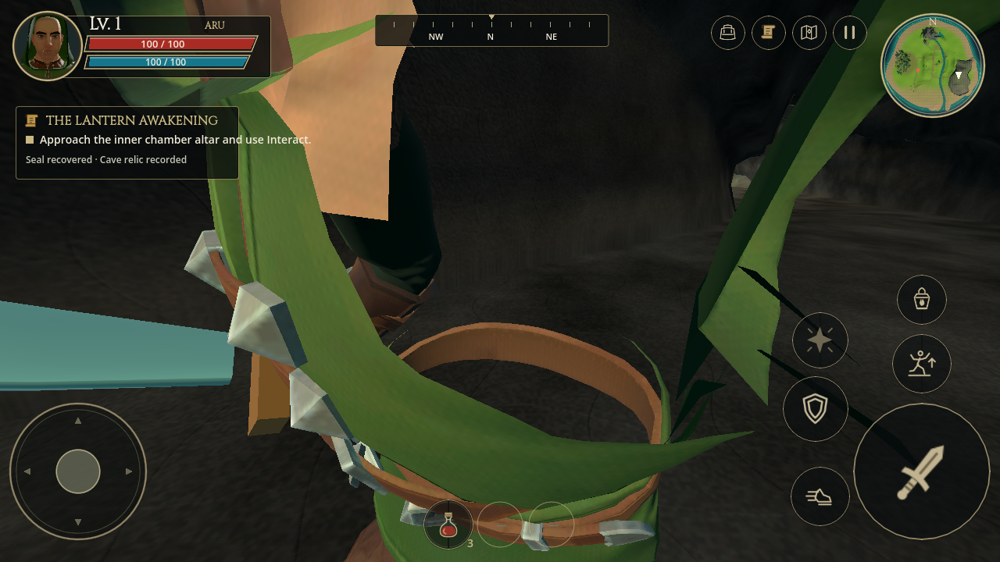
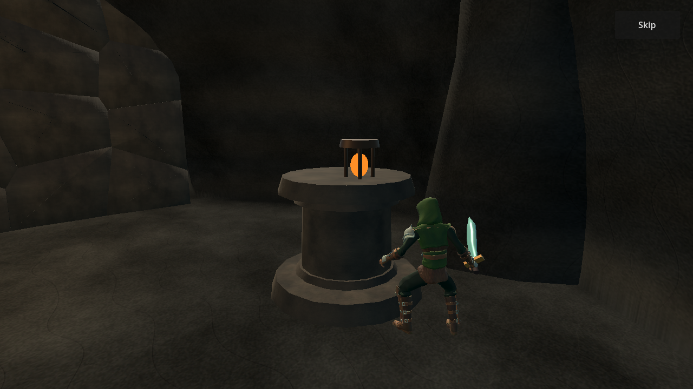
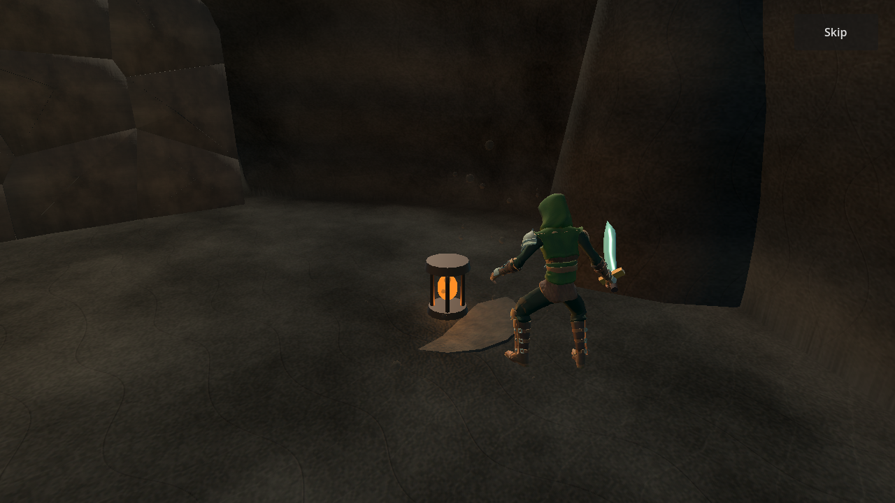
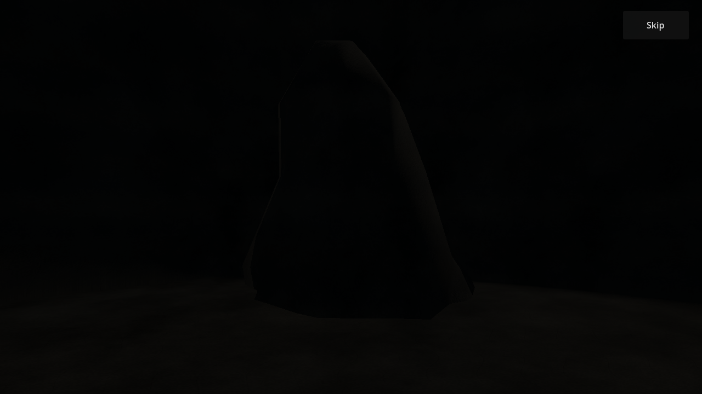
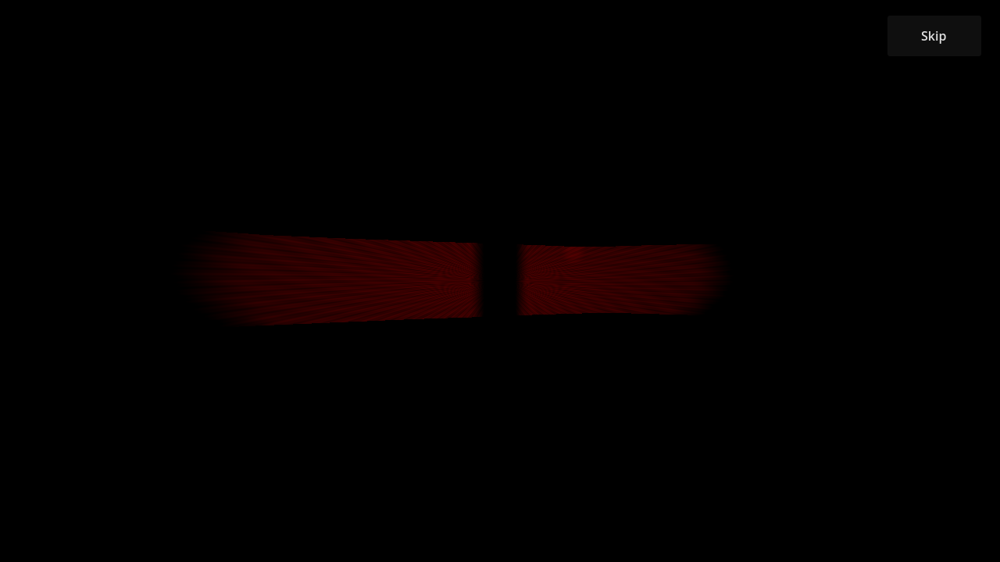
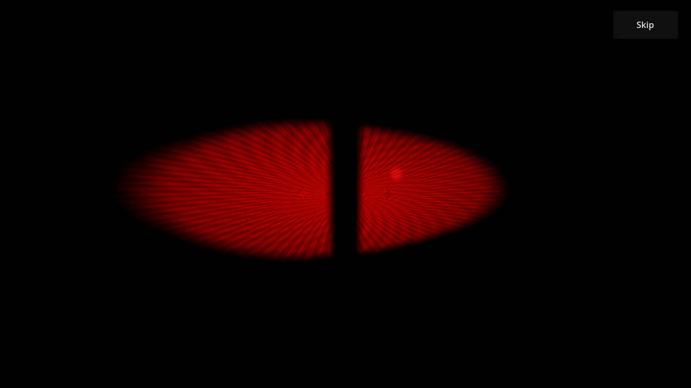
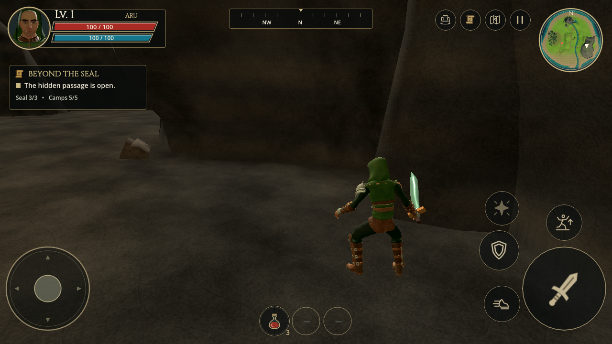
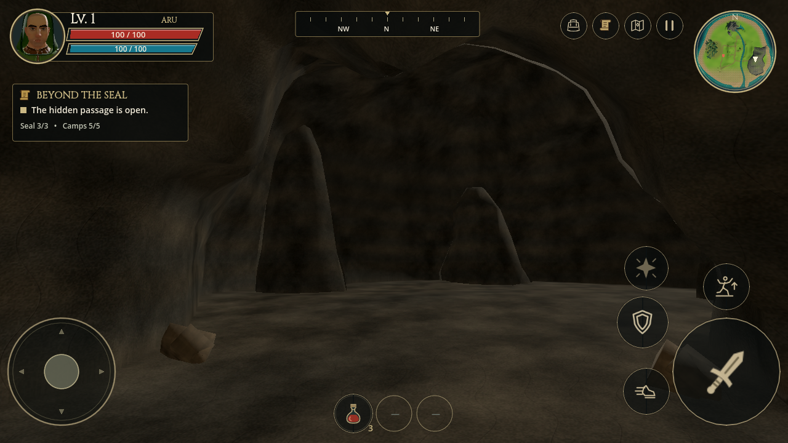
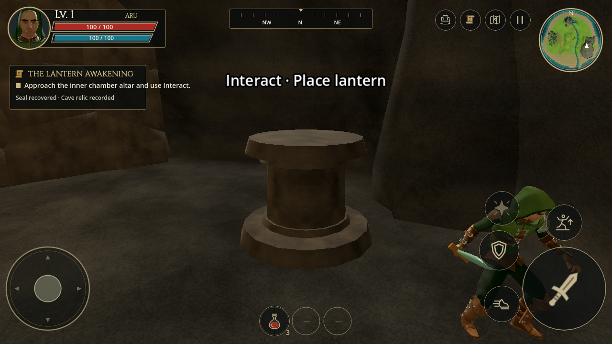
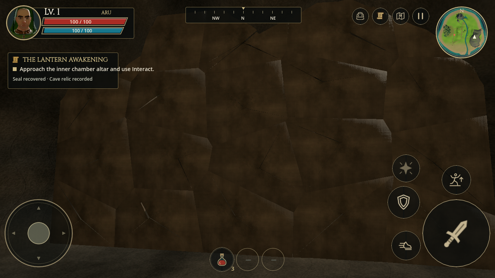

The Lantern Awakening
Report · Tests · Rendering cost · Preservation · Run candidate
Visual review candidate. The desktop live run contains transition stalls. Android testing is pending. Read the performance report before approving mobile readiness.
Loading local images…
01 Interact Gameplay

02 Lantern Placed

03 Stone Descending

04 Spreading Cracks

05 Wall Fracture

06 Passage Camera

07 Deep Hall

08 Complete Darkness

09 Eye Opening

10 Crimson Eye

11 Black Fade

12 Hero Control Returned

13 Journal Completed

After Pedestal

After Wall

Before Pedestal

Before Wall
